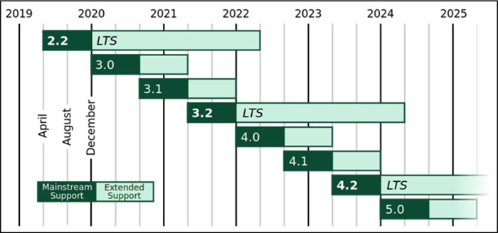
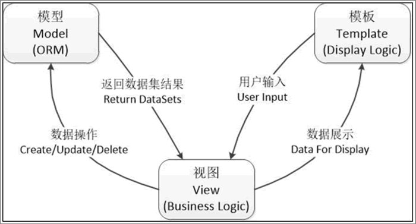
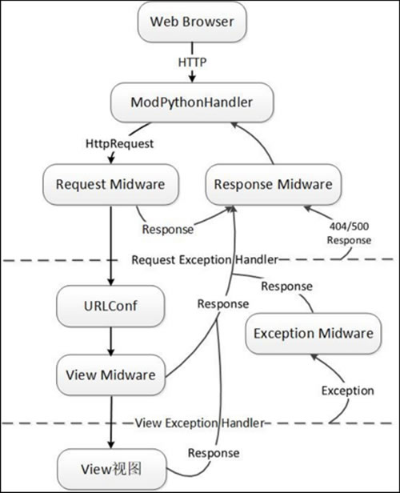
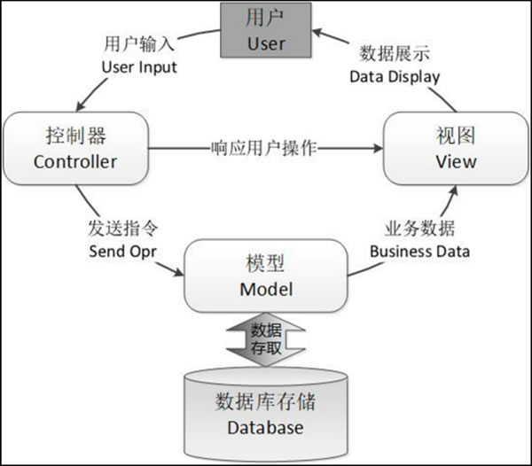
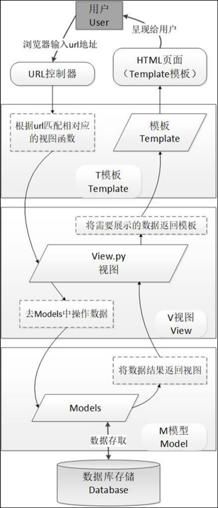

首页 > 编程笔记
Django框架介绍（非常详细）
基于 Python 语言的 Web 框架有很多，Django 框架是其中应用范围最广、性能最优异、最具发展前景的一款。当今，许多非常成功的 Web 网站和移动 App 都是基于 Django 框架开发的，如 Instagram、豆瓣等。
本节将介绍 Django 框架的基础、Django 框架的设计原理，以及 MVC 与 MTV 两种模式之间的区别。学习 Django 框架开发需要提前了解这些理论知识。
Django 框架主要用于开发数据库驱动型网站，因此其具有十分强大的数据库方面的功能。使用 Python 类的继承方式，仅仅通过几行代码就可以获取一个完整的、动态的数据库操作接口（Database API）。开发人员还可以通过执行 SQL 语句，实现数据模型与数据库的解耦（即数据模型的设计不需要依赖于特定的数据库），通过简单地配置就可以轻松更换不同类型的数据库。
近年来，Django 框架的发展势头非常迅猛，版本的更新迭代速度非常快，这可能也是得益于 Python 编程语言地位的不断上升。图 1 描述的就是由 Django 官方网站提供的、最新的产品发布路线图。
目前最新的 Django 版本是 3.0+，在未来 5 年的规划中，Django 框架将会更新到 5.0+ 版本。
不过从严格意义上讲，Django 框架采用了一种更为特殊的 MTV 设计模式，其中的“M”代表模型、“V”代表视图、“T”代表模板。MTV 模式本质上也是基于 MVC 模式的，是从 MVC 模式变化而来的。
那么，MTV 模式的具体内容是什么呢？下面，我们将 MTV 拆分开来逐一进行详细介绍。
此外，MTV 模式还需要一个 URL 分发器，其作用是将 URL 页面请求分发给不同的 V 视图（View）去处理，然后 V 视图（View）再调用相应的 M 模型（Model）和 T 模板（Template）。其实仔细品味可以发现，这个 URL 分发器所实现的就是 MVC 模式下控制器（Controller）设计的功能。URL 分发器的设计机制是使用正则表达式来匹配 URL，然后再调用相应的 Python 函数方法。
任何一个 Web 前端设计模式，都离不开控制器（Controller）这个模块，其代表着业务处理的核心部分。我们在 MTV 模式中看不到控制器（Controller）的设计，并不是 Django 框架没有设计该模块，而恰恰是将该模块的功能封装在底层了。这样做的好处就是，将开发人员从烦琐的控制层逻辑中解脱出来，通过编写更少的代码来实现用户需求，而控制层逻辑交由 Django 框架底层自动完成，大大地提高了开发人员的开发效率。
MTV 模式的响应原理如图 2 所示：
T 模板（Template）接收用户输入后交由 V 视图（View）去处理，V 视图（View）负责连接 M 模型（Model）进行数据操作、并将操作返回的结果再传送给 T 模板（Template）进行展示。以上就是 Django 框架的 MTV 模式的基本工作原理。
Django 框架下的 V 视图（View）不负责处理用户输入，只负责选择要展示的数据并传递到 T 模板（Template）上。然后，由 T 模板（Template）负责展示数据（展示效果），并最终呈现给终端用户。进一步来讲，就是 Django 框架将 MVC 中的 V 视图（View）解构为 V 视图和 T 模板两个部分，分别用于实现“展现数据”和“如何展现”这两部分功能，这样 T 模板（Template）可以根据用户需求来随时更换，而不仅仅限制于内置的模板。
Django 框架的视图展示流程如图 3 所示：
在 Django 服务器启动时，会自动加载在同一目录下的配置文件（settings.py），该配置文件涵盖了项目所需的全部配置参数。其中，最重要的配置参数就是“ROOT_URLCONF”，定义了 Django 服务器使用哪个 Python 模块来用作本项目的 URLConf（一般默认为 urls.py）。
当用户在浏览器（Web Browser）中访问 url 时，Django 服务器会接收到一个 HTTP 请求，通过服务器端特定的 Handler（ModPythonHandler），创建 HttpRequest 并传递给中间组件（Request Midware）进行处理，这些中间组件起着功能增强的作用。
Django 服务器会根据 ROOT_URLCONF 配置的参数来加载 URLConf；然后按顺序逐个匹配 URLConf 中的 URLpatterns，如果匹配成功，则会调用相关联的 View 视图中间件函数，并将 HttpRequest 对象作为第一个参数向下传递；最后，通过 View 视图返回一个 HttpResponse 对象（通常是 Response）。
另外，Django 框架还实现了完整的异常处理机制，其主要是通过异常处理中间件（Exception Midware）来实现的。当系统出现异常时，异常处理中间件（Exception Midware）会截获并判断异常类型，从而返回异常错误（404 或 500 等）信息。
MVC 模式是软件工程中的一种通用的软件架构模式，同样也适用于 Web 应用程序。MVC 将 Web 框架分为三个基本部分：模型（Model）、视图（View）和控制器（Controller），并以一种插件式的、松耦合的方式连接在一起。
在 MVC 模式中，模型（Model）负责编写具体的程序功能，建立业务对象与数据库的映射（ORM）；视图（View）为图形界面，负责与用户的交互（HTML页面）；控制器（Controller）负责转发请求，并对请求进行处理。
MVC 模式的用户操作流程如图 4 所示：
Django 框架的 MTV 模式用户操作流程，本质上与 MVC 模式的用户操作流程是一样的，也是为了在各组件间保持松耦合关系。二者只是定义上有些不同，如前文中介绍的，Django 框架的 MTV 模式指的是 M 模型（Model）、T 模板（Template）和 V 视图（View）。最重要的是，MTV 模式另外实现了一个 URL 分发器模块，其作用是将每一个 URL 页面请求分发给相应的 V 视图（View）进行处理，然后再由 V 视图（View）去调用相应的 M 模型（Model）和 T 模板（Template）。
Django 框架用户操作流程如图 5 所示：
如图 5 中的描述，用户通过浏览器向服务器端的 URL 分发器模块发起一个 URL 请求（request），这个 URL 请求会去访问视图函数（View.py）进行匹配，再进一步通过数据模型（Models）访问数据库进行数据操作，然后将操作结果逐级返回到模板（Template），并最终返回网页给用户。
本节将介绍 Django 框架的基础、Django 框架的设计原理，以及 MVC 与 MTV 两种模式之间的区别。学习 Django 框架开发需要提前了解这些理论知识。
Django的诞生和发展
Django 框架最初的诞生，主要是用来开发和管理 Lawrence Publishing Group（劳伦斯出版集团）旗下新闻网站的一款软件，是一款属于 CMS（Content Management System，内容管理系统）类的软件，并于 2005 年 7 月取得了 BSD 许可证下的发布权限。之后，经过开发人员的不断努力，Django 1.0 版于 2008 年 9 月正式发布。Django 框架的设计初衷是为了简便、快速地开发出易于维护的数据库驱动型网站，其所独具的代码复用功能，支持将各种组件以“插件”方式嵌入到整个应用框架，从而极大地提高了应用开发的效率。Django 框架自身具有很强大的扩展性，在开源社区中存在有许多功能强大的第三方插件，开发人员可以非常方便地以“即插即用”的方式应用到自己的项目中。BSD 许可证是一种开源许可证，可以简单理解为我们常说的开源协议，常见的5种开源协议有 BSD、Apache、GPL、LGPL 和 MIT。
Django 框架主要用于开发数据库驱动型网站，因此其具有十分强大的数据库方面的功能。使用 Python 类的继承方式，仅仅通过几行代码就可以获取一个完整的、动态的数据库操作接口（Database API）。开发人员还可以通过执行 SQL 语句，实现数据模型与数据库的解耦（即数据模型的设计不需要依赖于特定的数据库），通过简单地配置就可以轻松更换不同类型的数据库。
近年来，Django 框架的发展势头非常迅猛，版本的更新迭代速度非常快，这可能也是得益于 Python 编程语言地位的不断上升。图 1 描述的就是由 Django 官方网站提供的、最新的产品发布路线图。

图 1 Django产品发布路线图
图 1 Django产品发布路线图
目前最新的 Django 版本是 3.0+，在未来 5 年的规划中，Django 框架将会更新到 5.0+ 版本。
MTV设计原理
相信大多数的 Web 开发者对于 MVC（Model、View、Controller）设计模式都不陌生，该设计模式已经成为 Web 框架中一种事实上的标准了，Django 框架自然也是一个遵循 MVC 设计模式的框架。不过从严格意义上讲，Django 框架采用了一种更为特殊的 MTV 设计模式，其中的“M”代表模型、“V”代表视图、“T”代表模板。MTV 模式本质上也是基于 MVC 模式的，是从 MVC 模式变化而来的。
那么，MTV 模式的具体内容是什么呢？下面，我们将 MTV 拆分开来逐一进行详细介绍。
- M 模型（Model）表示的是数据存取层，处于 MTV 模式的底层。M 模型负责处理与数据相关的所有事务，包括如何存取、如何验证有效性、如何处理数据之间关系等方面的内容。
- T 模板（Template）表示的是表现层，处于 MTV 模式的顶层。T 模板负责处理与表现相关的操作，包括如何在页面或其他类型文档中进行显示等方面的内容。
- V 视图（View）表示的是业务逻辑层，处于 MTV 模式的中间层。V 视图负责存取模型及调取适当模板的相关逻辑等方面的内容，是 M 模型与 T 模板之间进行沟通的桥梁。
此外，MTV 模式还需要一个 URL 分发器，其作用是将 URL 页面请求分发给不同的 V 视图（View）去处理，然后 V 视图（View）再调用相应的 M 模型（Model）和 T 模板（Template）。其实仔细品味可以发现，这个 URL 分发器所实现的就是 MVC 模式下控制器（Controller）设计的功能。URL 分发器的设计机制是使用正则表达式来匹配 URL，然后再调用相应的 Python 函数方法。
任何一个 Web 前端设计模式，都离不开控制器（Controller）这个模块，其代表着业务处理的核心部分。我们在 MTV 模式中看不到控制器（Controller）的设计，并不是 Django 框架没有设计该模块，而恰恰是将该模块的功能封装在底层了。这样做的好处就是，将开发人员从烦琐的控制层逻辑中解脱出来，通过编写更少的代码来实现用户需求，而控制层逻辑交由 Django 框架底层自动完成，大大地提高了开发人员的开发效率。
MTV 模式的响应原理如图 2 所示：

图 2 MTV模式响应原理
图 2 MTV模式响应原理
T 模板（Template）接收用户输入后交由 V 视图（View）去处理，V 视图（View）负责连接 M 模型（Model）进行数据操作、并将操作返回的结果再传送给 T 模板（Template）进行展示。以上就是 Django 框架的 MTV 模式的基本工作原理。
Django框架的View视图展示机制
Django 框架采用了 MTV 设计模式，在工作机制上自然也有些特别之处，其中最显著的就是 V 视图（View）部分。请读者再看一下图 2 中的描述，MTV 模式中的 V 视图（View）是不负责处理用户输入的，这一点就是 MTV 模式特殊之处。Django 框架下的 V 视图（View）不负责处理用户输入，只负责选择要展示的数据并传递到 T 模板（Template）上。然后，由 T 模板（Template）负责展示数据（展示效果），并最终呈现给终端用户。进一步来讲，就是 Django 框架将 MVC 中的 V 视图（View）解构为 V 视图和 T 模板两个部分，分别用于实现“展现数据”和“如何展现”这两部分功能，这样 T 模板（Template）可以根据用户需求来随时更换，而不仅仅限制于内置的模板。
Django 框架的视图展示流程如图 3 所示：

图 3 Django视图展示
图 3 Django视图展示
在 Django 服务器启动时，会自动加载在同一目录下的配置文件（settings.py），该配置文件涵盖了项目所需的全部配置参数。其中，最重要的配置参数就是“ROOT_URLCONF”，定义了 Django 服务器使用哪个 Python 模块来用作本项目的 URLConf（一般默认为 urls.py）。
当用户在浏览器（Web Browser）中访问 url 时，Django 服务器会接收到一个 HTTP 请求，通过服务器端特定的 Handler（ModPythonHandler），创建 HttpRequest 并传递给中间组件（Request Midware）进行处理，这些中间组件起着功能增强的作用。
Django 服务器会根据 ROOT_URLCONF 配置的参数来加载 URLConf；然后按顺序逐个匹配 URLConf 中的 URLpatterns，如果匹配成功，则会调用相关联的 View 视图中间件函数，并将 HttpRequest 对象作为第一个参数向下传递；最后，通过 View 视图返回一个 HttpResponse 对象（通常是 Response）。
另外，Django 框架还实现了完整的异常处理机制，其主要是通过异常处理中间件（Exception Midware）来实现的。当系统出现异常时，异常处理中间件（Exception Midware）会截获并判断异常类型，从而返回异常错误（404 或 500 等）信息。
Django框架的用户操作流程
Django 框架设计的 MTV 模式也是基于传统的 MVC 模式的，本质上也是为了各组件之间保持松耦合关系，只是定义上有些许不同。MVC 模式之所以能够成为 Web 框架最流行的设计标准，也是因为其比较完美地契合了用户的操作流程。MVC 模式是软件工程中的一种通用的软件架构模式，同样也适用于 Web 应用程序。MVC 将 Web 框架分为三个基本部分：模型（Model）、视图（View）和控制器（Controller），并以一种插件式的、松耦合的方式连接在一起。
在 MVC 模式中，模型（Model）负责编写具体的程序功能，建立业务对象与数据库的映射（ORM）；视图（View）为图形界面，负责与用户的交互（HTML页面）；控制器（Controller）负责转发请求，并对请求进行处理。
MVC 模式的用户操作流程如图 4 所示：

图 4 MVC模式用户操作流程
图 4 MVC模式用户操作流程
Django 框架的 MTV 模式用户操作流程，本质上与 MVC 模式的用户操作流程是一样的，也是为了在各组件间保持松耦合关系。二者只是定义上有些不同，如前文中介绍的，Django 框架的 MTV 模式指的是 M 模型（Model）、T 模板（Template）和 V 视图（View）。最重要的是，MTV 模式另外实现了一个 URL 分发器模块，其作用是将每一个 URL 页面请求分发给相应的 V 视图（View）进行处理，然后再由 V 视图（View）去调用相应的 M 模型（Model）和 T 模板（Template）。
Django 框架用户操作流程如图 5 所示：

图 5 Django框架用户操作流程制
图 5 Django框架用户操作流程制
如图 5 中的描述，用户通过浏览器向服务器端的 URL 分发器模块发起一个 URL 请求（request），这个 URL 请求会去访问视图函数（View.py）进行匹配，再进一步通过数据模型（Models）访问数据库进行数据操作，然后将操作结果逐级返回到模板（Template），并最终返回网页给用户。
Django框架的主要特点
这里给大家介绍 Django 框架的主要特点，其他一些小优点，读者在学习过程中会慢慢体会：- 基于 Python 语言及 MVC 模式，具有开发快捷、低耦合、部署方便、可重用性高和维护成本低等显著特点。
- 通过一个 URL 分发器模块进行 URL 分派，分发器使用正则表达式来匹配 URL，支持开发人员采用自定义 URL 方式，且没有框架的特定限定，使用起来非常灵活。
- 可以方便地生成各种表单模型，实现表单的有效性检验，且支持从自定义的模型实例生成相应的表单。
- 具有强大且可扩展的模板语言，支持分隔设计、内容和 Python 代码，并且具有可继承性。
- 以 Python 类的形式定义数据模型，通过 ORM（对象关系映射）将模型与关系数据库进行连接，开发人员将得到一个非常容易使用的数据库 API，同时也支持在 Django 框架中直接使用原始 SQL 语句。
- 内置国际化系统，支持开发多种语言的 Web 网站。
- 缓存系统采用与 memcached、Redis 等缓存系统联用的方式，提高了页面的加载速度。
- 内置了一个可视化的、自动化管理员界面（Admin Site），其类似于一个 CMS 系统（内容管理系统），开发人员可以方便快捷地通过该界面进行人员管理和内容更新等操作。
关注公众号「站长严长生」，在手机上阅读所有教程，随时随地都能学习。内含一款搜索神器，免费下载全网书籍和视频。

微信扫码关注公众号